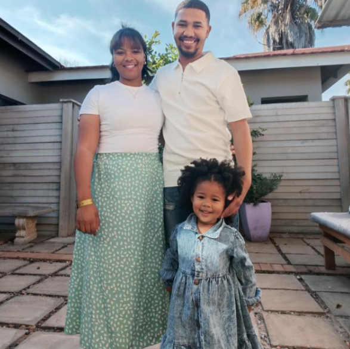

Marchell Von Buchenroder

Summary
Enthusiastic and motivated aspiring Web Developer with a strong foundation in HTML, CSS, and JavaScript,
gained through recent hands-on projects and self-directed learning. Passionate about building responsive,
user-friendly websites and continuously improving coding skills. Eager to contribute to a dynamic development team
and grow as a professional in a real-world environment.
Education
- Matriculated in 2011 - Exemption
- Completed my N4-N6 Human Resource Management - 2012 - 2014
- Completed my N4-N5 Marketing - 2015-2017
Work Experience
EPWP Plumbling and Construction (2012-2014)
- Learnt plumbling and construction methods
- Practical and onsite experience gained
- Cerfitified Plumber and Construction voorman
Astore Keymak Port Elizabeth (2015-2025)
- Learnt plumbling and construction methods
- Practical and onsite experience gained
- Cerfitified Plumber and Construction voorman
Skills
- Communication Skills – Clear and persuasive verbal and written communication with clients and internal teams.
- Customer Relationship Management – Building and maintaining strong client relationships.
- Problem-Solving – Quickly identifying issues in the field and resolving them efficiently.
- Product Knowledge – Quickly learning and understanding product features to communicate value.
- Attention to Detail – Ensuring accuracy in order details, documentation, and client data.
- Technical Literacy – Using CRM systems, mobile sales tools, and basic tech troubleshooting.
Other
About Me
Contact Me